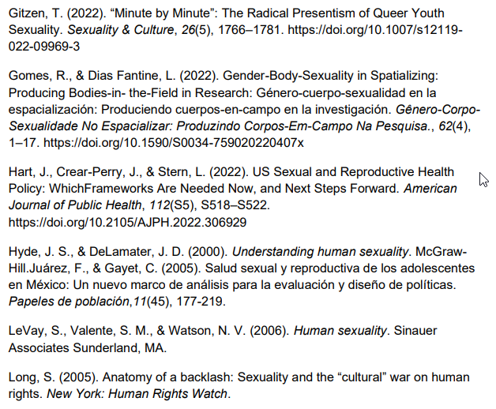
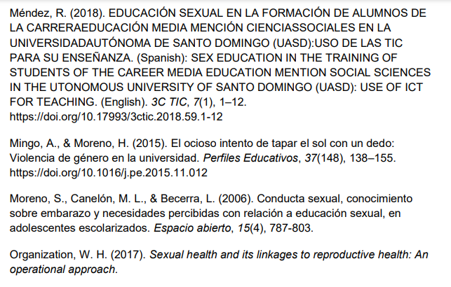
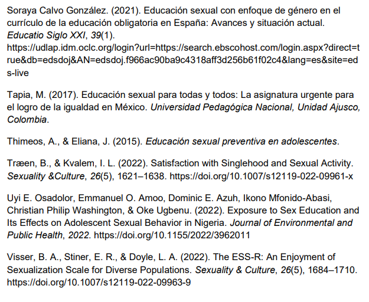
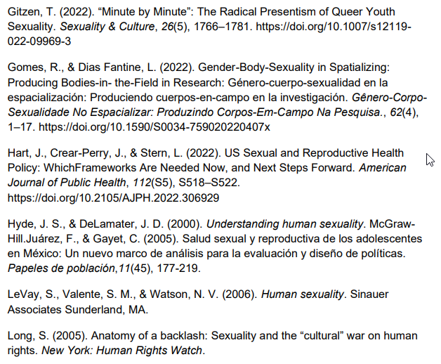
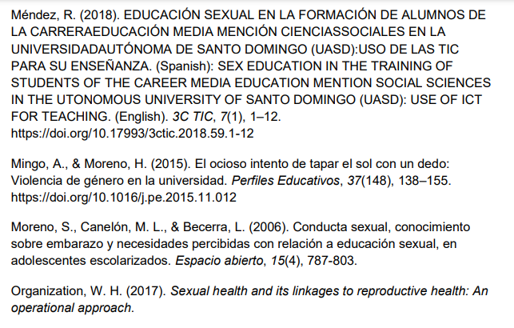
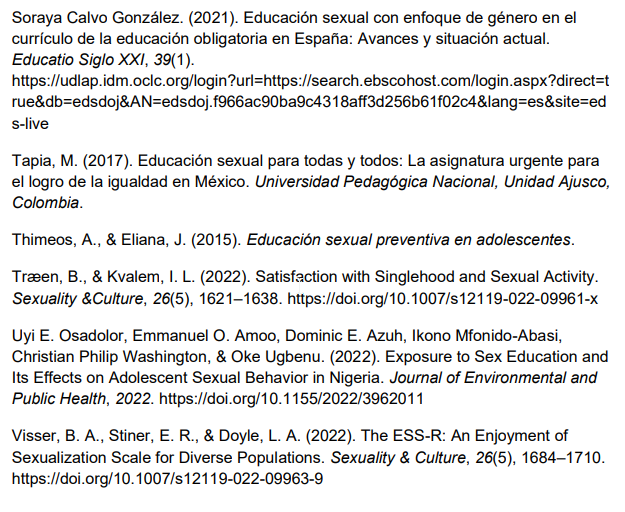

Revisión de literatura
descarga la versión completa de la revisión de literatura pdfSexualidad
Según un artículo de la universidad de Oviedo se admite que la sexualidad presenta la realidad de que abarca varios conceptos como lo son el cuerpo, las emociones, entre otros. (Calvo González, S., 2021).
En otros aspectos tenemos las nuevas y modernas variantes de otros tipos de género, en donde por ejemplo encontramos a la gente de sexo fluido y/o a los queer que de acuerdo a un artículo escrito por Timothy Gitzen, el autor elabora que la sexualidad queer puede no ser óptima para las presiones sociales y/o mentalidades del futuro. (Gitzen, T., 2022).
Las diferentes categorías sociales que son impuestas por el hombre como lo son la sexualidad, la raza y el género son lo que componen la vida cotidiana, moldeando lo que son las relaciones sociales y los problemas que surgen cuando los individuos no siguen estas normas. Cegando a la sociedad en general al no conocer de esto, siendo importante destacar esta diferencia de ideas relacionadas con la sexualidad para que al estar informado cada persona pueda moldear su criterio sobre lo que es su propia sexualidad. (Gomes, R., 2022).
Según un artículo de la “World Health Organization” define que la reproducción sexual sana es en la que estamos sanos física, mental y socialmente. (W.H.O, 2017).
Como lo indica el artículo de la “American Public Health Association” la reproducción sexual saludable es indispensable para la salud en general y esto nunca se dice en vano ya que si no existieran las enfermedades de transmisión sexual no estaríamos incluyéndolo en este gran tópico (Hart, J., Crear-Perry, J., & Stern, L., 2022).
La sexualidad empieza desde que somos concebidos y termina hasta que morimos, cobrando aún más importancia la educación sobre está en nuestras vidas. Lo formulado con anterioridad se refleja en los embarazos precoces, actos de violaciones, entre otros. A pesar de que las escuelas fomenten esta educación, también es esencial que los padres empiecen a ejercer su rol de educadores ya que, sin eso, se complica aún más lo que es el ampliar dicho conocimiento para los más vulnerables que vienen siendo los adolescentes o niños. (Mendez, R., 2018).
Cabe resaltar la grandeza del tópico donde se hacen golpes culturales casi a diario, por ejemplo, gente luchando por sus derechos como se observa en el escrito “Anatomy of a Backlash” (Long, S., 2005).
No obstante, y con respecto a la idea principal del párrafo anterior también existen más problemas que abarcan la sexualidad y el machismo y donde se puede ver analizado es el artículo de la Universidad Nacional Autónoma de México. (Mingo, A., & Moreno, H., 2015).
Por último, según un artículo con el nombre de “Satisfaccion with Singlehood and Sexual Activity” indica que la sexualidad también puede ser experimentada individualmente. (Træen, B., & Kvalem, I. L., 2022).
Reproducción adolescente
A pesar de los esfuerzos gubernamentales para poder mejorar la salud sexual y reproductiva de los jóvenes en México, los resultados no han sido del todo positivos y es porque dependen de las condiciones sociales a las que se han adaptado y del funcionamiento del Programa Salud y Fecundidad. El estudio utiliza una nueva metodología llamada "análisis contextual dinámico" para realizar una revisión más amplia de las políticas y advertencias, teniendo así oportunidades para mejorar la salud sexual y reproductiva de los jóvenes. (Hyde, J. S., & DeLamater, J. D., 2000).
Para apoyar el párrafo anterior es evidente que la actitud sexual cambia drásticamente en la adolescencia y por ende se necesita atender con la educación adecuada. (Uyi E. Osadolor, Emmanuel O. Amoo, Dominic E. Azuh, Ikono Mfonido-Abasi, Christian Philip Washington, & Oke Ugbenu., 2022). Además, como lo señala un artículo de la universidad de Murcia el momento clave donde el docente encargado de repartir educación sexual tiene que tener la prueba curricular de poder tener los métodos más acertados en cuestión de enseñanza sexual es en la secundaria. (Soraya Calvo González., 2021).
Diferentes recursos son ahora disponibles los cuales orientan a los adolescentes y prácticamente a cualquier lector con respecto a su sexualidad tal y como lo hace el libro encontrado en amazon “Human Sexuality”. (LeVay, S., Valente, S. M., & Watson, N. V., 2006).
La educación sexual en el contexto familiar y escolar, nos informa sobre la falta de corresponsabilidad entre la familia y la escuela. Es responsabilidad de estos dos medios educativos promover y apoyar la salud sexual y vigilar para que en las comunidades educativas (escuela) se implemente una educación sexual oportuna, de calidad y con equidad para las niñas y los niños adolescentes. (Frinco, V. del C. L., 2013). Esto tiene que ver con la necesidad de los adolescentes escolarizados en materia de educación sexual, (Moreno, S., Canelón, M. L., & Becerra, L., 2006). Porque nos da conocer que los adolescentes sienten que tienen la necesidad de informarse sobre la salud sexual y se basan en cifras con evidencia y porcentajes donde nos muestra que verídicamente los adolescentes generan este interés por el tema. Los resultados que demuestra esta investigación nos indican que la mayoría de los adolescentes basándonos en los porcentajes de esta investigación, quieren mejorar el proceso de comunicación y modificar los roles tradicionales y de ahí participar en programas de habilidad para auto valorarse, auto conocerse y tener una comunicación más eficaz con su pareja al tratar temas de salud sexual.
Una buena educación sexual en México podría ayudar a reducir numerosos tipos de problemas de diferente índole como serían de tipo social o económicos relacionados con la reproducción adolescente. Lo anterior tomando en cuenta estudios realizados en el 2014, donde se concluye que el mexicano promedio alrededor de los 16 años empieza su vida sexual, que 77 de cada mil embarazos son de menores de edad, así como se da a conocer que una cantidad numerosa de padres de familia han reportado abuso sexual en sus hijos o hijas. (Tapia, M., 2017)
Algunos de los objetivos en el plan de educación sexual efectiva que dio a conocer el ministerio de educación son los siguientes (Thimeos, A., & Eliana, J., 2015).
- Asegurarse que el ministerio cuente con la capacidad de poder implementar en todos los niveles este sistema de educación.
- Promover y apoyar a nivel educativo y familiar para que realicen esta formación afectiva y sexual,para su desarrollo.
- Apoyar y asegurar que en las instituciones educativas, implementen una educación sexual oportuna, de calidad y con equidad de género. (Thimeos, A., & Eliana, J., 2015).
Auto objetivación y el disfrute de la sexualización
En este estudio se encontró que el disfrutar de la sexualización tiene que ver con la auto objetivación, pero no son lo mismo en ambos casos de hombres y mujeres, mientras que en estudios previos se había notado una diferencia, en la cual los hombres reportaban un mayor disfrute de la sexualización, mientras que las mujeres de la auto objetivación.
En los casos que se presentaba la auto objetivación se notaban distintas conductas como: ansiedad por su apariencia, desórdenes alimenticios (bulimia, anorexia) y el deseo de tener diferentes medidas corporales, y se concluyó que el disfrutar de la sexualización tiene casos menos dañinos para la salud a comparación de la auto objetivación (Visser, B. A., Stiner, E. R., & Doyle, L. A., 2022).
Conclusión
Una de nuestras soluciones para apuntar a la mayoria de personas fue desarrollar una página de facebook 😙
Lista de referencias
 




